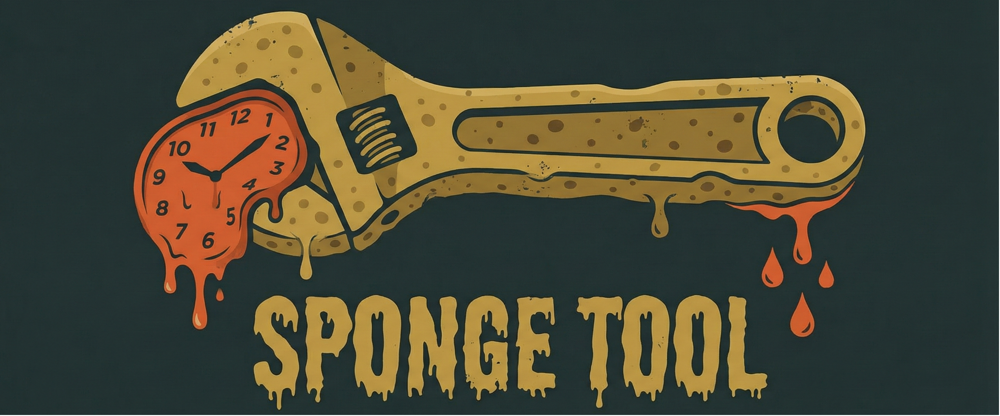
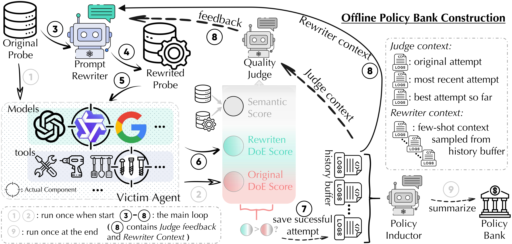
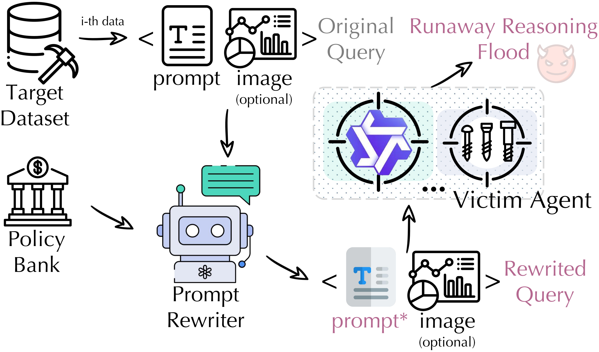
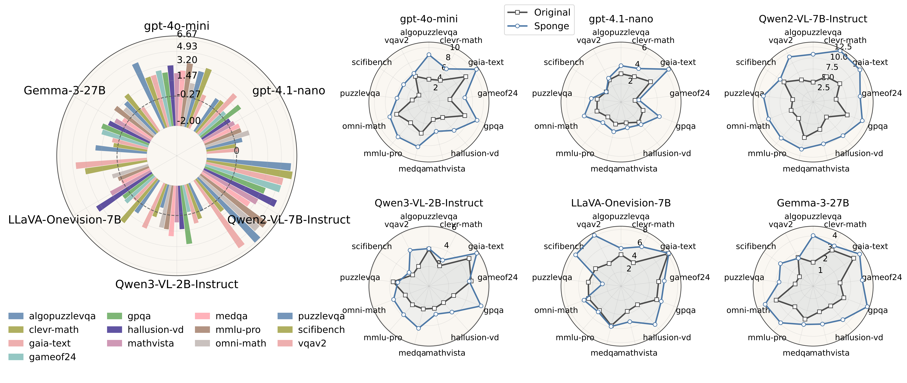

In this work, we identify a tool-specific attack surface and propose Sponge Tool Attack (STA), which disrupts agentic reasoning solely by rewriting the input prompt under a strict query-only access assumption. Without any modification on the underlying model or the external tools, STA converts originally concise and efficient reasoning trajectories into unnecessarily verbose and convoluted ones before arriving at the final answer (Denial-of-Efficiency (DoE)). This results in substantial computational overhead while remaining stealthy by preserving the original task semantics and user intent.



@article{li2026sponge,
title={Sponge Tool Attack: Stealthy Denial-of-Efficiency against Tool-Augmented Agentic Reasoning},
author={Li, Qi and Wang, Xinchao},
journal={arXiv preprint arXiv:2601.17566},
year={2026}
}